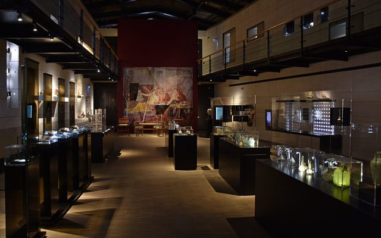
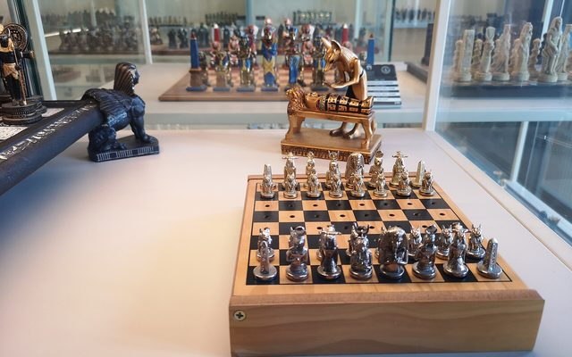
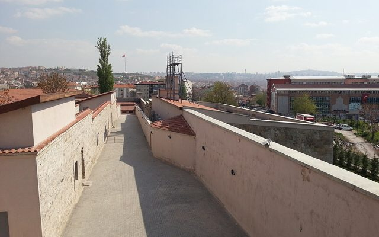

Home › Things to see, province by province › Ankara
The Kültür Varlıkları guide lists 36 places in Ankara: 29 museum, 4 archaeological site, 2 castle & historic building, 1 religious building. Below you will find the highlights, a map and the full list.
⭐ Highlights

1 · Ankara · MuseumAnadolu Medeniyetleri Museum
The Museum of Anatolian Civilizations sits at the foot of Ankara Castle in the restored 15th-century Mahmut Pasha Bazaar and Kurşunlu Han.

2 · Ankara · MuseumGordion Museum
Gordion Museum lies in Yassıhöyük village near Polatlı, beside Gordion, capital of the Phrygian kingdom – the city of legendary King Midas and of the 'Gordian knot'…

3 · Ankara · Museum15 Temmuz Demokrasi Museum
The 15 July Democracy Museum is a museum of recent history established to document the coup attempt of the night of 15 July 2016 and the events of that night.
🗺 On the map
📍 All places (36)
Museum (29)
Anadolu Medeniyetleri MuseumMuseumGordion MuseumMuseum · UNESCO15 Temmuz Demokrasi MuseumMuseum Alagöz Karargâh MuseumMuseum
Alagöz Karargâh MuseumMuseum Altınköy Açık Hava MuseumMuseum
Altınköy Açık Hava MuseumMuseum Anadolu Yaşayan Köy Açık Hava MuseumMuseum
Anadolu Yaşayan Köy Açık Hava MuseumMuseum Ankara Oyuncak MuseumMuseum
Ankara Oyuncak MuseumMuseum Anıtkabir (Atatürk Mausoleum)Museum
Anıtkabir (Atatürk Mausoleum)Museum Atatürk Konutu and Demiryolları MuseumMuseum
Atatürk Konutu and Demiryolları MuseumMuseum Beypazarı Yaşayan MüzeMuseum
Beypazarı Yaşayan MüzeMuseum CerModernMuseum
CerModernMuseum Cumhuriyet MuseumMuseum
Cumhuriyet MuseumMuseum
Erimtan Arkeoloji and Sanat MuseumMuseum Etnografya MuseumMuseum
Etnografya MuseumMuseum
Gökyay Vakfı Satranç MuseumMuseum Hava Kuvvetleri MuseumMuseum
Hava Kuvvetleri MuseumMuseum Kurtuluş Savaşı MuseumMuseum
Kurtuluş Savaşı MuseumMuseum Mke Sanayi and Teknoloji MuseumMuseum
Mke Sanayi and Teknoloji MuseumMuseum Odtü Bilim and Teknoloji MuseumMuseum
Odtü Bilim and Teknoloji MuseumMuseum Resim Heykel MuseumMuseum
Resim Heykel MuseumMuseum Tcdd Açık Hava Buharlı Lokomotif MuseumMuseum
Tcdd Açık Hava Buharlı Lokomotif MuseumMuseum Tcdd Malıköy Tren İstasyonu MuseumMuseum
Tcdd Malıköy Tren İstasyonu MuseumMuseum Türk Hava Kurumu MuseumMuseum
Türk Hava Kurumu MuseumMuseum
Ulucanlar Cezaevi MuseumMuseum Çengelhan Rahmi M. Koç MuseumMuseumJandarma MuseumMuseumKahramankazan 15 Temmuz Şehitleri and Demokrasi MuseumMuseumMehmet Akif Ersoy Edebiyat Müze KütüphanesiMuseumMta Şehvar Doğa Tarihi MuseumMuseum
Çengelhan Rahmi M. Koç MuseumMuseumJandarma MuseumMuseumKahramankazan 15 Temmuz Şehitleri and Demokrasi MuseumMuseumMehmet Akif Ersoy Edebiyat Müze KütüphanesiMuseumMta Şehvar Doğa Tarihi MuseumMuseumArchaeological site (4)
 Ankara Roma TiyatrosuArchaeological site
Ankara Roma TiyatrosuArchaeological site Temple of AugustusArchaeological site
Temple of AugustusArchaeological site Juliopolis NekropolüArchaeological site
Juliopolis NekropolüArchaeological site Roman Baths of AnkaraArchaeological site
Roman Baths of AnkaraArchaeological siteCastle & historic building (2)


Religious building (1)

🧭 Routes including this province
🏺 Related civilisation guides
Anatolia's first villages: Aşıklı Höyük and Çatalhöyük8300–5700 BC · NeolithicThe Hittites and the Neo-Hittite kingdoms1650–700 BC · Bronze and Iron AgesPhrygians and Lydians9th–6th century BC · Iron AgeFrom Gallipoli to the Republic1915 – 1923The Seljuks and the Beyliks1071 – 15th centuryAnatolia in the Roman period133 BC – 4th century AD